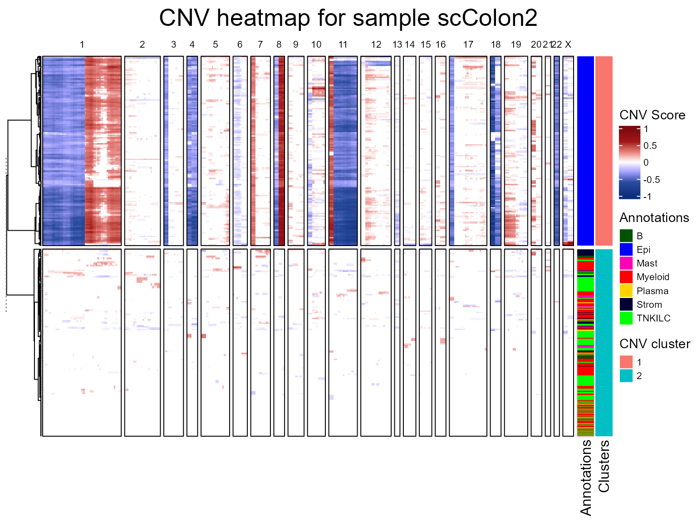
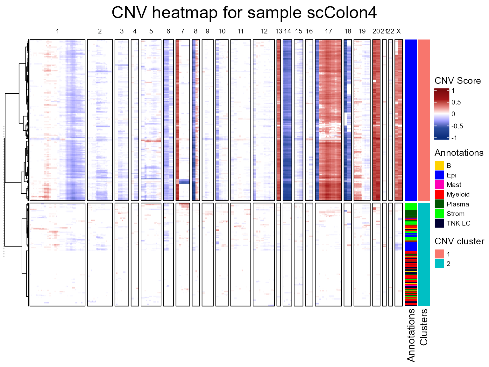
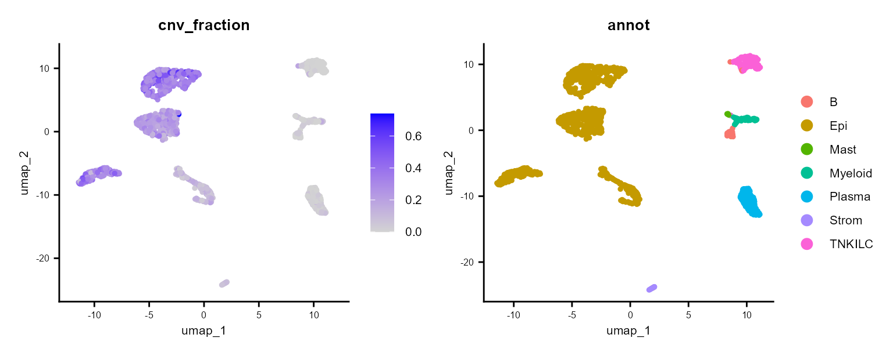
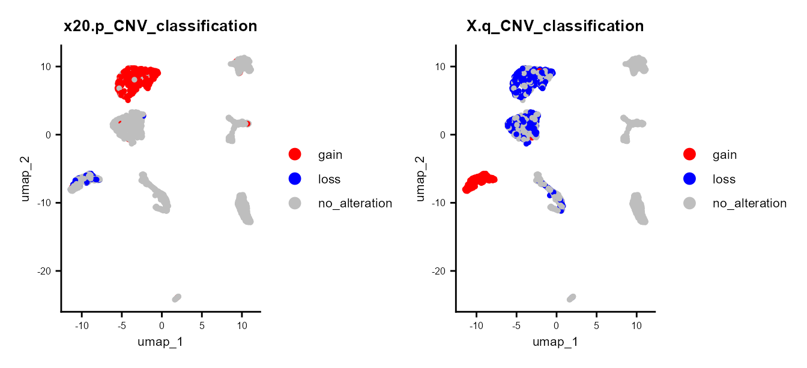
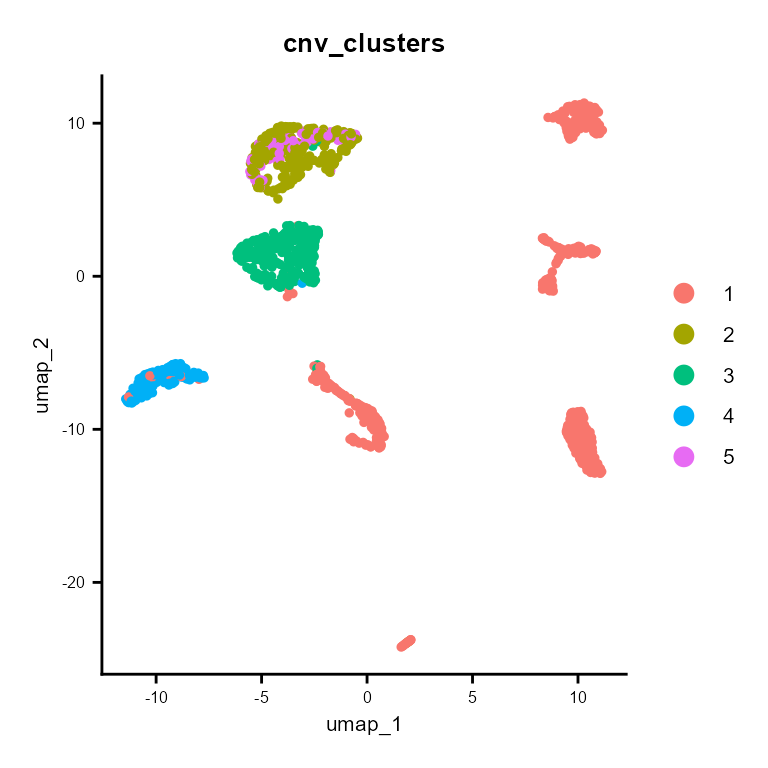
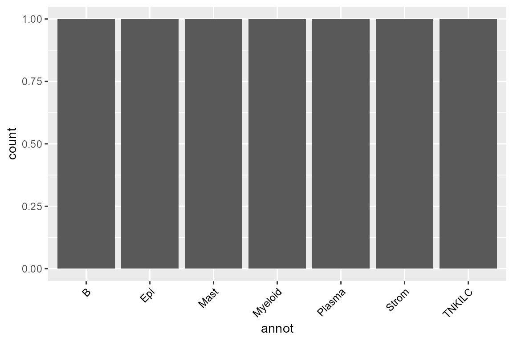
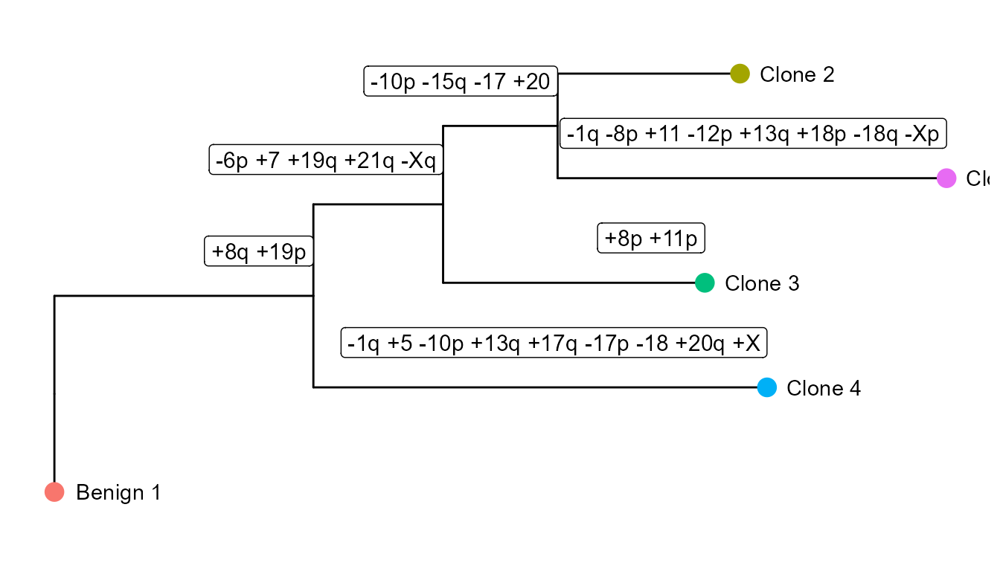

Introduction to fastCNV - scRNAseq data
fastCNV_sc.RmdContext
fastCNV is a package to detect the putative Copy Number
Variations (CNVs) in single cell (scRNAseq) data or Spatial
Transcriptomics (ST) data. It also plots the computed CNVs.
In this vignette you will learn how to run this package on single scRNAseq seurat objects and on a list of scRNAseq Seurat objects.
Load packages
To get the example data used in this vignette, you’ll need to install
and load the fastCNVdata package.
remotes::install_github("must-bioinfo/fastCNV")
remotes::install_github("must-bioinfo/fastCNVdata")Load the example data
fastCNV package works both on scRNAseq data or ST data,
and we will demonstrate on scRNAseq here, and there is another vignette
for ST data.
Here, we load scColon1, scColon2, scColon3, scColon4 (scRNAseq data from colorectal tumors from Joanito et al. work).
Check annotation
You can load a separate annotation file for your dataset if this
information is not available in the Seurat object. In this example, cell
type annotations are already present under the column
"annot" of the metadata.
# Import the annotation file corresponding to your sample. For 10X ST data you can annotate your spots with LoupeBrowser
annotation_file <- read.csv("/path/to/your/annotations/for/scColon1.csv")
scColon1[["annot"]] <- annotation_file$Annot
unique(scColon1[["annot"]])
#> annot
#> C113_N_1_1_0_c1_v2_id-AAACCTGTCAGTGTTG normal
#> C113_N_1_1_0_c1_v2_id-AAAGCAACACCCTATC Fibro
#> C113_N_1_1_0_c1_v2_id-AAATGCCGTCACTTCC NK
#> C113_N_1_1_0_c1_v2_id-AACGTTGAGAGGGATA PlasmaCells
#> C113_N_1_1_0_c1_v2_id-AACTCTTGTCTCACCT MyeloLineage
#> C113_N_1_1_0_c1_v2_id-ACCCACTTCGAATGCT Tcells
#> C113_N_1_1_0_c1_v2_id-ACTGCTCAGACACTAA Bcells
#> C113_N_1_1_0_c1_v2_id-CGGAGTCTCACCAGGC SmoothMuscle
#> C113_N_1_1_0_c1_v2_id-CGGGTCATCTACCAGA Mastocytes
#> C113_N_1_1_0_c1_v2_id-GTTAAGCTCACAGTAC EndoArteriel
#> C113_T_1_1_0_c1_v2_id-AAACCTGAGATCGATA EpiT
#> C113_T_1_1_0_c1_v2_id-ATCATGGGTCGTCTTC DC6.pDC
#> C113_T_1_1_0_c1_v2_id-CGATTGATCTGCGACG Pericytes
#> C113_T_1_1_1_c1_v2_id-AGCGGTCAGGCTCAGA Schwann.Entericglial
unique(scColon2[["annot"]])
#> annot
#> C159_T_1_1_0_c1_v3_id-AAACCCAAGCAATTAG EpiT
#> C159_T_1_1_0_c1_v3_id-AAACCCAGTACTGCGC SmoothMuscle
#> C159_T_1_1_0_c1_v3_id-AAACGAAGTATGGAAT Tcells
#> C159_T_1_1_0_c1_v3_id-AACAAGATCTTCCCAG MyeloLineage
#> C159_T_1_1_0_c1_v3_id-AACCTGATCAATCTCT Bcells
#> C159_T_1_1_0_c1_v3_id-ACGGTTACACGGCACT EndoArteriel
#> C159_T_1_1_0_c1_v3_id-ACGTAGTCATGACACT Fibro
#> C159_T_1_1_0_c1_v3_id-AGTTCGAAGCGCTGCT Pericytes
#> C159_T_1_1_0_c1_v3_id-CAACAGTTCCCGAGAC NK
#> C159_T_1_1_0_c1_v3_id-CACGGGTAGTAACAGT Mastocytes
#> C159_T_1_1_0_c1_v3_id-CTACATTGTATCCTTT DC6.pDC
#> C159_T_1_1_0_c1_v3_id-CTCAGTCTCCTAGCCT PlasmaCells
#> C159_T_1_1_1_c1_v3_id-CATACTTCACACACTA Neutro
unique(scColon3[["annot"]])
#> annot
#> C160_T_1_1_0_c1_v3_id-AAACCCACATGACTCA EpiT
#> C160_T_1_1_0_c1_v3_id-AAACGCTGTGATAGAT Tcells
#> C160_T_1_1_0_c1_v3_id-AAACGCTTCAATCTTC EndoArteriel
#> C160_T_1_1_0_c1_v3_id-AAAGAACAGGAAGTAG MyeloLineage
#> C160_T_1_1_0_c1_v3_id-AAAGGGCCACCCTGAG NK
#> C160_T_1_1_0_c1_v3_id-AACCAACGTTCTCCAC PlasmaCells
#> C160_T_1_1_0_c1_v3_id-AACCTGAAGACTCGAG Fibro
#> C160_T_1_1_0_c1_v3_id-AACGAAAAGTGTACAA Pericytes
#> C160_T_1_1_0_c1_v3_id-ACTGATGAGGGCTAAC Bcells
#> C160_T_1_1_0_c1_v3_id-ATCCATTCACGGCACT Neutro
#> C160_T_1_1_0_c1_v3_id-ATCCCTGTCTACGCGG Mastocytes
#> C160_T_1_1_0_c1_v3_id-CAGTTAGAGCTCTTCC EndoLymphatic
#> C160_T_1_1_0_c1_v3_id-CTGTGGGGTGTTGAGG Schwann.Entericglial
#> C160_T_1_1_0_c1_v3_id-GTGCGTGGTGAAGCTG DC6.pDC
unique(scColon4[["annot"]])
#> annot
#> C161_T_1_1_0_c1_v3_id-AAACCCAAGGAGGGTG Tcells
#> C161_T_1_1_0_c1_v3_id-AAACCCAAGTTGGAGC EpiT
#> C161_T_1_1_0_c1_v3_id-AAACCCATCGTGGCGT EndoArteriel
#> C161_T_1_1_0_c1_v3_id-AAACGAAGTCACTACA Fibro
#> C161_T_1_1_0_c1_v3_id-AAACGCTTCCGAAGGA PlasmaCells
#> C161_T_1_1_0_c1_v3_id-AAAGGGCGTCTCAAGT MyeloLineage
#> C161_T_1_1_0_c1_v3_id-AAAGTCCGTCCGTTTC DC6.pDC
#> C161_T_1_1_0_c1_v3_id-AACAAGATCATCTGTT Bcells
#> C161_T_1_1_0_c1_v3_id-AACCCAACACATAGCT NK
#> C161_T_1_1_0_c1_v3_id-AAGTTCGTCTCGGTCT Pericytes
#> C161_T_1_1_0_c1_v3_id-AGCGCCACAGTGTGCC Mastocytes
#> C161_T_1_1_0_c1_v3_id-AGTGCCGGTACATTGC SmoothMuscle
#> C161_T_1_1_0_c1_v3_id-ATTCAGGGTCGTCAGC Schwann.Entericglial
#> C161_T_1_1_0_c1_v3_id-GAGTCTAAGGGTTAAT EndoLymphaticRun fastCNV
During this step, fastCNV() will use:
prepareCountsForCNVAnalysis: runs the Seurat standard clustering algorithm and then aggregates the observations (cells or spots) to into metaspots with up to the number of counts defined byaggregFactor(default 15,000). In addition, the observations can be aggregated on their seurat cluster AND their cell type combined by leaving defaultaggregateByVar = TRUEand specifying parameterreferenceVar. If the Seurat object has previously been clustered, the clustering will be re-done on sctransformed (SCT) data using 10 PCs with default parameters toFindNeighborsandFindClusters. This can be skipped by settingreClusterSeurat = FALSE.CNVanalysis: computes the CNV. If you have annotations for your Seurat object, you can add the parametersreferenceVarandreferenceLabel.plotCNVResults: to visualize the results (stored in the assays slot of the Seurat object). By default, the parameterdownsizePlotis set toFALSE, which builds a detailed plot, but takes an important time to render. If desired, you can set the parameter toTRUE, which decreases the rendering time by plotting the results at the meta-cell level instead of the cell-level, thus decreasing the definition of the CNV results plotted.
This function will also build a PDF file for each sample containing their corresponding CNV heatmap in the current working directory, which can be changed using thesavePathparameter.CNVPerChromosome: to compute the CNV per chromosome arm, and store it in the metadata of the Seurat object. This part offastCNV()can be skipped by turninggetCNVPerChromosometoFALSE.
We are first going to run fastCNV() on our scColon1
object, taking as reference the cells labeled as Bcells,
DC6.pDC,EndoArteriel, Fibro,
Mastocytes, MyeloLineage, NK,
Pericytes, PlasmaCells,
Schwann.Entericglial, SmoothMuscle and
Tcells.
scColon1 <- fastCNV(seuratObj = scColon1, sampleName = "scColon1", referenceVar =
"annot", referenceLabel = c("Bcells", "DC6.pDC", "EndoArteriel",
"Fibro", "Mastocytes", "MyeloLineage", "NK", "Pericytes",
"PlasmaCells", "Schwann.Entericglial", "SmoothMuscle","Tcells"))
#> [1] "Aggregating counts matrix."
#> [1] "Running Seurat SCTransform and clustering. This could take some time."
#> [1] "Sample : scColon1"
#> Modularity Optimizer version 1.3.0 by Ludo Waltman and Nees Jan van Eck
#>
#> Number of nodes: 2840
#> Number of edges: 84183
#>
#> Running Louvain algorithm...
#> Maximum modularity in 10 random starts: 0.8914
#> Number of communities: 16
#> Elapsed time: 0 seconds
#> [1] "Seurat SCTransform and clustering done for sample scColon1."
#> [1] "Running CNVAnalysis"
#> [1] "CNVAnalysis done!"
#> [1] "Plotting CNV results. This step may take some time."Then, we are going to run the fastCNV() function on a
list of Seurat objects. fastCNV() if run on a list of
Seurat objects with the default parameters will build a pooled reference
between all the samples, which is particularly useful for data not
containing any healthy cells to build its own reference.
seuratList <- c(scColon2,scColon3,scColon4)
sampleNames <- c("scColon2", "scColon3", "scColon4")
names(seuratList) <- sampleNames
referencelabels <- c("Bcells", "DC6.pDC", "EndoArteriel",
"Fibro", "Mastocytes", "MyeloLineage", "NK", "Pericytes",
"PlasmaCells", "SmoothMuscle","Tcells")
seuratList <- fastCNV(seuratList, sampleNames, referenceVar = "annot",
referenceLabel = referencelabels)
#> [1] "Aggregating counts matrix."
#> [1] "Running Seurat SCTransform and clustering. This could take some time."
#> [1] "Sample : scColon2"
#> Modularity Optimizer version 1.3.0 by Ludo Waltman and Nees Jan van Eck
#>
#> Number of nodes: 1493
#> Number of edges: 41666
#>
#> Running Louvain algorithm...
#> Maximum modularity in 10 random starts: 0.8447
#> Number of communities: 14
#> Elapsed time: 0 seconds
#> [1] "Seurat SCTransform and clustering done for sample scColon2."
#> [1] "Running Seurat SCTransform and clustering. This could take some time."
#> [1] "Sample : scColon3"
#> Modularity Optimizer version 1.3.0 by Ludo Waltman and Nees Jan van Eck
#>
#> Number of nodes: 2975
#> Number of edges: 87792
#>
#> Running Louvain algorithm...
#> Maximum modularity in 10 random starts: 0.8729
#> Number of communities: 13
#> Elapsed time: 0 seconds
#> [1] "Seurat SCTransform and clustering done for sample scColon3."
#> [1] "Running Seurat SCTransform and clustering. This could take some time."
#> [1] "Sample : scColon4"
#> Modularity Optimizer version 1.3.0 by Ludo Waltman and Nees Jan van Eck
#>
#> Number of nodes: 3390
#> Number of edges: 99667
#>
#> Running Louvain algorithm...
#> Maximum modularity in 10 random starts: 0.8664
#> Number of communities: 13
#> Elapsed time: 0 seconds
#> [1] "Seurat SCTransform and clustering done for sample scColon4."
#> [1] "Running CNVAnalysis"
#> [1] "CNVAnalysis done!"
#> [1] "Plotting CNV results. This step may take some time."
CNV fraction
fastCNV also computes a cnv_fraction for each
observation in the Seurat object. This can be directly plotted using
Seurat plotting functions, as we’ll demonstrate on scColon1:
library(ggplot2)
common_theme <- theme(
plot.title = element_text(size = 10),
legend.text = element_text(size = 8),
legend.title = element_text(size = 8),
axis.title = element_text(size = 8),
axis.text = element_text(size = 6)
)
FeaturePlot(scColon1, features = "cnv_fraction", reduction = "umap", ) & common_theme |
DimPlot(scColon1, reduction = "umap", group.by = "annot") & common_theme
Here, we see some clusters with much higher CNV fractions than others. We can directly plot and test this:
ggplot(FetchData(scColon1, vars = c("annot", "cnv_fraction")),
aes(annot, cnv_fraction, fill = annot)) +
geom_boxplot() +
theme(axis.text.x = element_text(angle = 45, vjust = 1, hjust = 1, color = "black"))We can also plot the CNV per chromosome arm with the plotting functions from Seurat.
library(scales)
FeaturePlot(scColon1, features = "17q_CNV") +
scale_color_distiller(palette = "RdBu", direction = -1, limits = c(-1, 1),
rescaler = function(x, to = c(0, 1), from = NULL) {
rescale_mid(x, to = to, mid = 0)
}) +
common_theme |
FeaturePlot(scColon1, features = "X_CNV") +
scale_color_distiller(palette = "RdBu", direction = -1, limits = c(-1, 1),
rescaler = function(x, to = c(0, 1), from = NULL) {
rescale_mid(x, to = to, mid = 0)
}) +
common_themeHere we see for example that one part of the epithelial tumor cells have a CNV loss in the chromosome 17q, while another part of the epithelial tumor cells do not, and another part have a gain of this same chromosome (17q) and of the chromosome X too.
CNV classification
Using the CNV per chromosome arm and CNVclassification()
we can get the alterations per chromosome arm (gain, loss or none).
CNVclassification() takes as arguments a Seurat object
containing in the metadata the CNV per chromosome arm, and the
thresholds for loss, gain or no alteration (default = c(-0.1, 0,
0.1).
Using these 3 peaks, it builds a table for each cell/spot and each
chromosome arm containing either “loss”, “gain” or “no_alteration”.
scColon1 <- CNVclassification(scColon1)
DimPlot(scColon1, group.by = "8q_CNV_classification") &
scale_color_manual(values = c(gain = "red", no_alteration = "grey", loss = "blue")) &
common_theme |
DimPlot(scColon1, group.by = "X_CNV_classification") &
scale_color_manual(values = c(gain = "red", no_alteration = "grey", loss = "blue")) &
common_theme
CNV clusters
In addition to the CNV fraction, we can obtain clusters based on the
CNV matrix by running CNVcluster(). This runs standard
Seurat clustering pipeline on the CNV scores per observation – uses the
first 10 PCs to building the neighborhood graph and then Louvain
clustering to find the clusters.
scColon1 <- CNVcluster(scColon1, resolution = 0.4)Results of CNVcluster are saved in the Seurat object
under the "cnv_clusters" metadata variable, which can be
plotted with Seurat functions.
DimPlot(scColon1, group.by = "cnv_clusters") + common_theme
And we can retrieve this metadata and plot it directly. Here, we
relate the cnv_clusters with our annotation variable
annot.
library(SeuratObject)
ggplot(FetchData(scColon1, vars = c("cnv_clusters", "annot")), aes(annot, fill = cnv_clusters)) +
geom_bar(position = "fill") +
theme(axis.text.x = element_text(angle = 45, vjust = 1, hjust = 1, color = "black"))
We find that tumor cells are virtually always cnv_cluster 0, 2, 3 5 or 6 ; meanwhile, healthy cells tend to be cnv_cluster 1 or 5 which present very few or no CNV.
Note that we can also use cnv_clusters to label the CNV heatmap,
directly using the parameter splitPlotOfVar of the
plotCNVResults() function.
plotCNVResults(scColon1, referenceVar = "annot", splitPlotOnVar = "cnv_clusters")
CNV tree
As we can see, there are 5 tumor subclusters (0, 2, 3, 4 and 6) in scColon1, and 2 healthy subclusters (1 and 5). In this part of the vignette, we will show how to plot the CNV subclonality tree.
First, we will build a metacell for each cluster, using
generateCNVClonesMatrix().
cnv_matrix_clusters <- generateCNVClonesMatrix(scColon1, healthyClusters = c("1", "5"))Now, we build the tree, using CNVtree(),
annotateCNVtree() and plotCNVtree(). -
CNVtree() will build the subclonality tree. -
annotateCNVtree() will annotate each cnv gain/loss in the
tree. - plotCNVtree() will output the tree.
tree <- CNVtree(cnv_matrix_clusters)
tree_data <- annotateCNVtree(tree, cnv_matrix_clusters, 0.13)
plotCNVtree(tree_data)